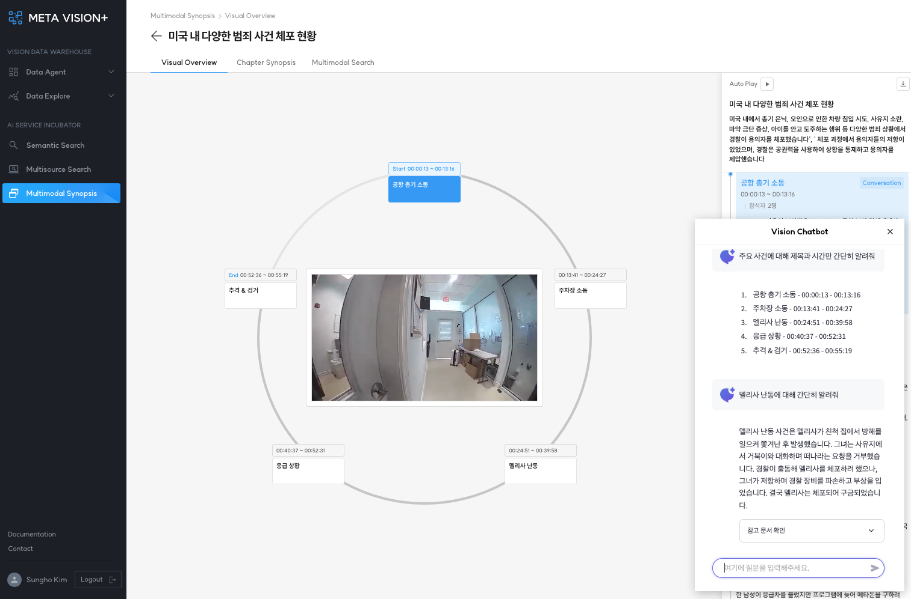

Visual Overview¶
비디오 내 주요 이벤트(Starred Events) 목록을 제공합니다.
1. 주요 기능¶
- Play Video Synopsis: 선택 이벤트의 요약 비디오 재생
- Auto Play: 이벤트 비디오 재생 종료 시, 자동으로 다음 이벤트 비디오 재생
- Report Download: 요약 정보를 주어진 템플릿 형태로 레포트 발행
- Event Summary: 선택 이벤트의 요약 정보 제공
- ChatBot: 동영상내 사건/등장인물/대화에 대한 챗봇 서비스 제공

2. Report Download¶
아래 요약 정보를 주어진 템플릿 형태로 레포트 발행
- 비디오 요약
- 이벤트별 인물/장소/일시 정보를 포함한 요약
- 대화록 및 대화별 주제 정보 요약
- 이벤트별 주요 장면(스크린샷) 제공
3. ChatBot¶
RAG 시스템을 활용한 챗봇 서비스 제공
- 비디오별 레포트 파일을 활용한 RAG 시스템 및 챗봇 개발
